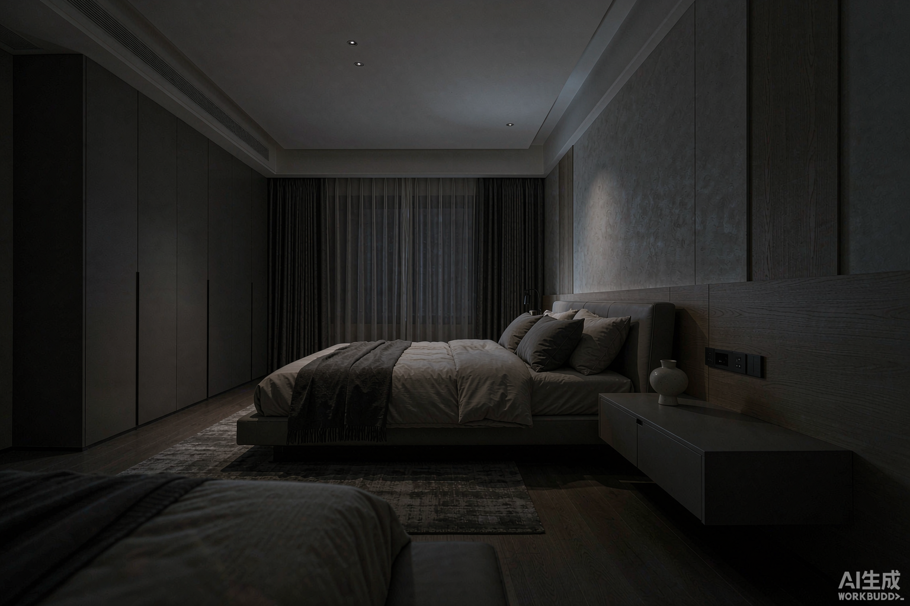
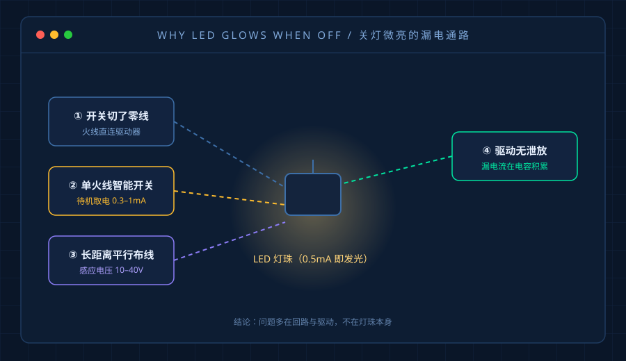
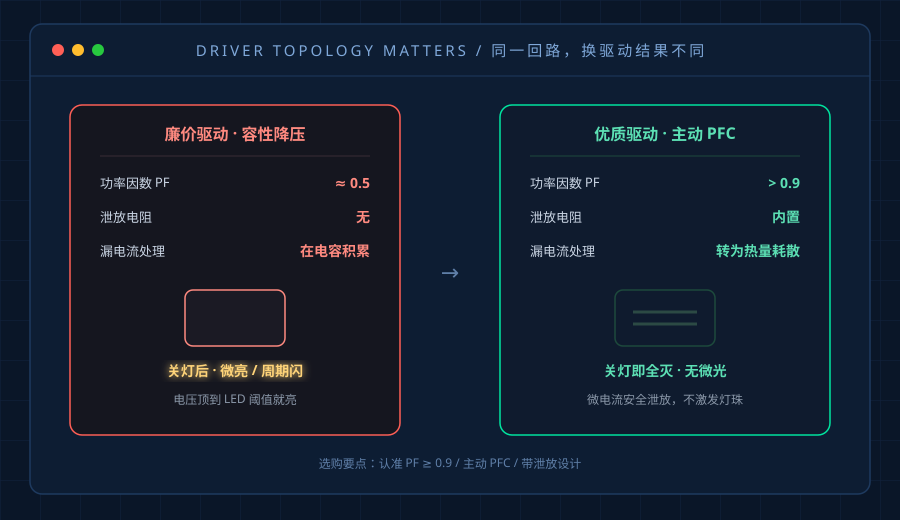
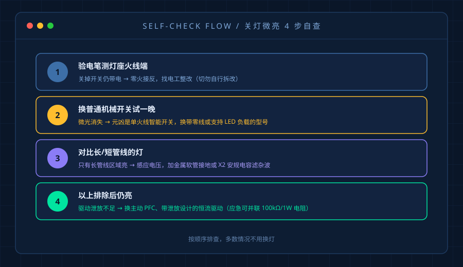

"关了灯，天花板上一圈淡淡的微光，闭眼都能感觉到，翻来覆去睡不着。"
最近后台问得最多的，不是频闪、不是掉线，而是这个——关灯之后的"幽灵光"。屋子明明全黑，灯珠却还亮着一层灰白色，说它亮吧照不亮任何东西，说它灭了吧又确实在发光。
用了智能开关的家庭尤其明显。今天把这件事讲透，因为它有一个反直觉的结论：绝大多数情况，问题不在灯具，而在回路和驱动。
先说结论：这不是故障，是漏电流
LED 和当年的白炽灯有两个本质区别：
- 白炽灯要靠大电流烧红灯丝才亮，几点几毫安的微电流根本推不亮它；
- LED 是半导体，只要零点几毫安就能激发荧光粉发出可见光。
也就是说，只要回路里有一丁点残余电流能"蹭"到 LED 上，它就亮给你看。这个现象行业里叫 ghosting（幽灵光） 或 afterglow（余辉）。
它不危险，但有两个实际影响：一是影响睡眠（黑暗环境里人眼对微光极敏感），二是长期微电流通过会加速灯珠和驱动老化，缩短寿命。

四大成因，按概率排序
1. 开关控制了零线（老房最常见）
标准的机械开关应该切断火线（L）。如果装修电工把零线接进了开关，那开关断开后火线仍然连着驱动器，灯具始终"半带电"，通过墙体、线路的分布电容形成微弱回路，就亮了。
自查：关掉开关，用验电笔测灯座的火线端。如果还有电，基本就是零火接反。这个必须找持证电工整改，别自己上手。
2. 单火线智能开关 / 带指示灯的开关
这是近几年"幽灵光"飙升的头号原因。
市面上大量智能开关为了免布零线，靠"流过负载取电"来维持自己的 Wi-Fi 或 Zigbee 待机——也就是开关在断开状态时，仍偷偷放一点点电流穿过你的灯。通常 0.3–1mA，正好够点亮敏感的低功率 LED。
带霓虹指示灯的机械开关同理，那颗小灯珠会持续漏 0.3mA 左右。
自查：把开关换成普通机械开关试一晚，或者把智能开关的负载端临时断开。如果微光消失，元凶就是它。
3. 长距离平行布线产生的感应电压
开关线如果和火线在同一根管或同一排线槽里并行走很远（超过 3 米就明显），两者之间会像电容一样产生感应电压——实测常能到 10–40V。电压有了，虽然带不动负载，但足够驱动 LED 微微发光。
自查：这种多见于大平层、别墅、老房改造的长管线区域。临时判据是"同一回路的短管线灯不亮，长管线的亮"。
4. 驱动电源自身的泄放设计
这一条最容易被忽略，却是我们做电源的人最在意的。
廉价驱动用的是容性降压方案（功率因数 PF 只有 0.5 左右），输入端没有泄放电阻，任何一点漏电流都会在输入电容上慢慢积累，直到电压顶到 LED 正向导通阈值——灯就亮了，或者每隔几秒闪一下。
优质驱动用的是主动 PFC（PF > 0.9），内部带泄放电阻，会把这点微电流当成热量安全耗散掉，从源头就不会有微光。这也是为什么同一个回路，换根好驱动，微光就没了。

对症下药：四种情况的正确处理
搞清楚成因，解决方案就清晰了：
| 成因 | 处理方式 | 成本 |
|---|---|---|
| 零火接反 | 找电工把开关改接火线 | 人工费 |
| 单火线智能开关漏电 | 换"带零线"智能开关，或换支持 LED 负载的型号 | 开关差价 |
| 感应电压 | 开关线加金属软管并接地，或加 X2 安规电容滤杂波 | 几十元 |
| 驱动泄放不足 | 换主动 PFC、带泄放设计的驱动电源 | 驱动差价 |
如果暂时不想大动，有个应急办法：在灯座两端并联一颗 100kΩ–470kΩ / 1W 的金属膜电阻，给残余电流开一条低阻通路把它"泄"掉。几块钱就能解决，注意装在通风处、远离易燃物。
但更彻底的方案还是从驱动端解决——选带泄放电路、高启动阈值的恒流驱动，等于在源头把漏电流掐断，不用每次换灯都重新折腾。

选购时怎么避开这个坑
正在装修、准备买灯的朋友，记住三条：
- 开关尽量布零线。多花一点点线材，后期用智能开关才不会踩坑。这是最省心的选择。
- 认准驱动的功率因数。PF ≥ 0.9、主动 PFC 的驱动，抗干扰和抗微亮能力强得多；只看瓦数不看驱动品质，是最大的坑。
- 长距离回路优先选隔离式驱动。隔离式驱动的漏电流比非隔离式小一个量级，别墅、大户型尤其要注意。
写在最后
关灯微亮，很多人第一反应是"灯坏了，换一个"——结果换完还是亮。因为真正的问题在回路和驱动这两个看不见的地方。
一盏灯亮不亮、亮得健不健康，光看灯珠参数是不够的。它背后那颗驱动电源的漏电流控制、泄放设计、功率因数，才是决定你晚上能不能安心睡着的关键。
下次看到那层"幽灵光"，别急着怪灯，先按上面的顺序查一遍——多半能省下一笔冤枉钱。